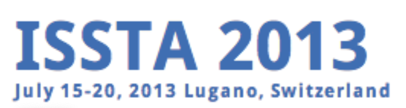

Home
Services
Info
Mauro Pezzè
Professor at:
•
Università della svizzera italiana
•
Schaffhausen Institute of Technology
Links
Research Group
Google Scholar
LinkedIn
DBLP
Book
Editorial Boards
Associate editor (2013-2018)
Associate editor (2006-2013)
Editor in Chief (2019 - today)
Conference organization
